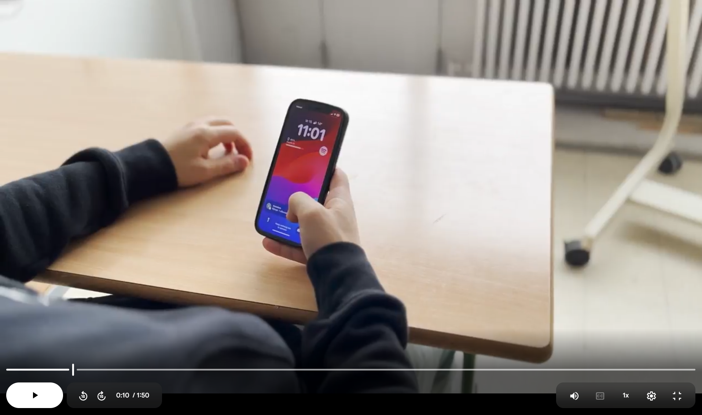

Kortfilm - van script tot montage
- Vak: Audiovisueel Atelier
- jaar: 2024
- Tool(s): MS Word, camera app, Adobe Premiere Pro
Voor deze opdracht maakte ik in groepsverband een kortfilm, met als focus het leren begrijpen van het volledige filmproces en het correct toepassen van over-de-schouder-shots (x-as). Binnen de groep schreef iedereen eerst individueel een eigen script. Vervolgens werd één script geselecteerd dat als basis diende voor de uiteindelijke film, waarop we samen verder hebben gebouwd.
Tijdens de productie werden de rollen verdeeld: sommige groepsleden speelden de acteurs, terwijl anderen, waaronder ikzelf, verantwoordelijk waren voor het camerawerk. De focus lag voornamelijk op het filmen en het bewust toepassen van kadrering en camerastandpunten, in functie van de x-as en de continuïteit van de scène.
Na de opnames monteerde ieder groepslid de film individueel. Dit gaf ruimte om een eigen interpretatie te geven aan hetzelfde beeldmateriaal en om het effect van montage op tempo, spanning en verhaal te onderzoeken.
Deze opdracht gaf me inzicht in hoe een filmproductie van begin tot eind wordt opgebouwd: van scenario en samenwerking op set tot technische keuzes tijdens het filmen en de creatieve afwerking in de montage.

Wegens privacy voor de gefilmde personen, deel ik de video niet.